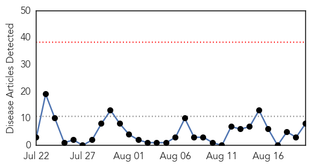

Chikungunya
30-Day Web Trend
0 alerts, 0 warnings

30-Day Twitter Trend
0 alerts, 0 warnings

Article Locations

Article Confidences

Top Articles:
- 0.999
- Three new suspected cases of chikungunya
- 0.997
- Latin America Has No Antibodies to Fight Chikungunya Fever
- 0.997
- DARPA Announces Challenge to Curb Spread of Infectious Diseases
- 0.958
- Chikungunya vaccine shows promise
- 0.928
- Seven additional cases of Chikungunya confirmed in Jamaica
- 0.749
- Igbaras village put under ‘state of calamity’
- 0.613
- Health officials warn of dangerous bacteria in Gulf
- 0.523
- Pacific Community Launches a new Web-based Map of Epidemic Alerts
Top Tweets:
-
No tweets found for Aug 20, 2014
Unknown
30-Day Web Trend
0 alerts, 0 warnings

30-Day Twitter Trend
6 alerts, 1 warnings

Article Locations

Article Confidences

Top Articles:
- 0.977
- 254 encephalitis deaths in Bengal this year
- 0.917
- Chicago Tribune
- 0.917
- Chicago Tribune
- 0.917
- Chicago Tribune
- 0.917
- Chicago Tribune
- 0.917
- Chicago Tribune
- 0.917
- Chicago Tribune
- 0.917
- Chicago Tribune
- 0.917
- Chicago Tribune
- 0.917
- Chicago Tribune
- 0.917
- Chicago Tribune
- 0.917
- Chicago Tribune
- 0.917
- Chicago Tribune
- 0.917
- Chicago Tribune
- 0.917
- Chicago Tribune
- 0.917
- Chicago Tribune
- 0.917
- Chicago Tribune
- 0.917
- Chicago Tribune
- 0.917
- Chicago Tribune
- 0.917
- Chicago Tribune
- 0.912
- Mobile County teen being treated for malaria
- 0.910
- The world windows to Thailand
- 0.910
- The world windows to Thailand
- 0.910
- The world windows to Thailand
- 0.910
- The world windows to Thailand
- 0.893
- Reiteramos nuestro repudio al genocidio. exigimos que las Naciones Unidas intervengan inmediatamente a favor de la paz para el pueblo de Irak
- 0.866
- Italy's PM Renzi visits Bahrka camp for displaced Iraqis fleeing violence in northern city of Tal Afar on outskirts of Kurdish city of Arbil
- 0.866
- U.S. could send another 300 military personnel to Iraq -official
- 0.866
- Separatists shoot down Ukrainian SU-25 fighter plane
- 0.866
- Death toll from Ebola outbreak in West Africa rises to 1350
- 0.866
- Followers of the Shi'ite Houthi group brandish their weapons during a gathering near Sanaa
- 0.866
- Iraqi foreign minister calls for global support against Islamic State
- 0.856
- Lyme disease growing increasingly common in Quebec - Montreal
- 0.846
- WHO calls on international community to support health preventative efforts in Ukraine
- 0.816
- Sudan Vision Daily
- 0.772
- Rancho Mirage, California Physician Saves Casino Worker from Deadly 'Flesh Eating Disease' - Live Trading News
- 0.764
- Listeria found in another workplace
- 0.748
- Rancho Mirage, California Physician Saves Casino Worker from Deadly 'Flesh Eating Disease'
- 0.683
- Dog owners warned of deadly virus
- 0.677
- ODU report points to ticks as major menace on Peninsula
- 0.640
- Pregnant women in United States are declining the flu vaccination
- 0.601
- Pulse growers warned of viral, aphid attack
- 0.593
- Salmonella Contamination Leads to Recall of Peanut and Almond Butter
- 0.580
- Common antibiotic linked to sudden heart deaths
- 0.567
- Research team evaluating Lyme disease in province
- 0.553
- Not to be forgotten: Helping people survive CAR crisis - Central African Republic
- 0.540
- Caritas provides food for flood evacuees in Nepal - Nepal
- 0.527
- Feds Point to Key Weak Point in West Virginia's Health Disaster Response
- 0.525
- Rabbit Fever discovered in Mesa County; no human cases of tularemia reported on Western Slope
- 0.518
- Our Opinion: Protect your child's health, now and in the future
Showing top 50 articles...
Top Tweets:
- 0.699
- Alarma el alto índice de asesinatos de mujeres en Bolivia: LA PAZ -AFP- El asesinato de casi 60 mujeres en l... http://t.co/KtasOZxo3s
- 0.606
- Hoy se desarrolla Expo Carreras de la Americana: Con el fin de ofrecer un espacio de orientación a los jóvenes... http://t.co/h3MO7bT5OQ
- 0.547
- Tradicional Feria de Naciones de la UNIDA en su X edición: Este evento pretende generar un espacio multicult... http://t.co/IDtBV8oveM